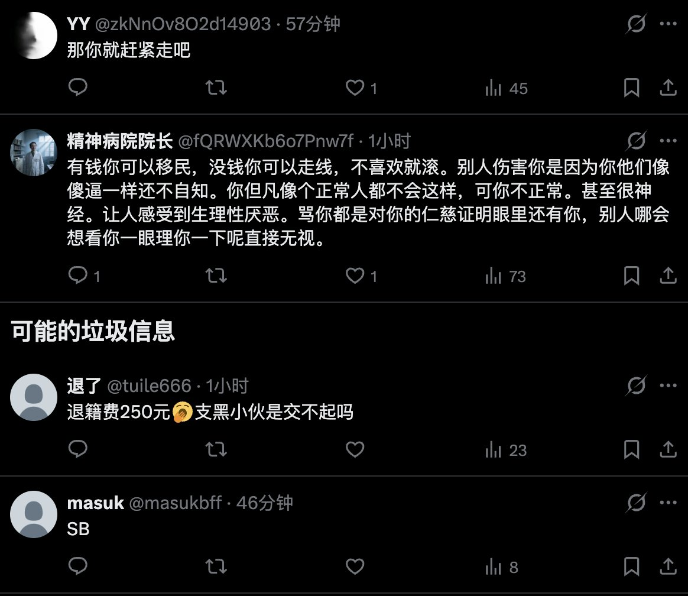

愿晚星照常升起🌈(keep4o)
@tadatsukiei
@hoshinofujivy 弱者愤怒，挥刀向更弱者。

愿晚星照常升起🌈(keep4o)
@tadatsukiei
@DonnaDo18266628 这群傻缺又犯什么病了？只会对着弱者怒目的狗杂种不要活在世界上好吗？！
星野ふじ
@hoshinofujivy
评论区里这种人....我觉得他们很可怜
自己国家有问题，不想着改变，反而谩骂提出问题的人
如果个人的痛苦与群体的责任无关，那么个人的抱怨也不应被群体所掩盖，这种人，我可以称它为「爱国贼」
“我明明抱怨小区有问题，你说我仇恨物业” https://t.co/iwT7GrU3qz https://t.co/6bGc6U3dqh